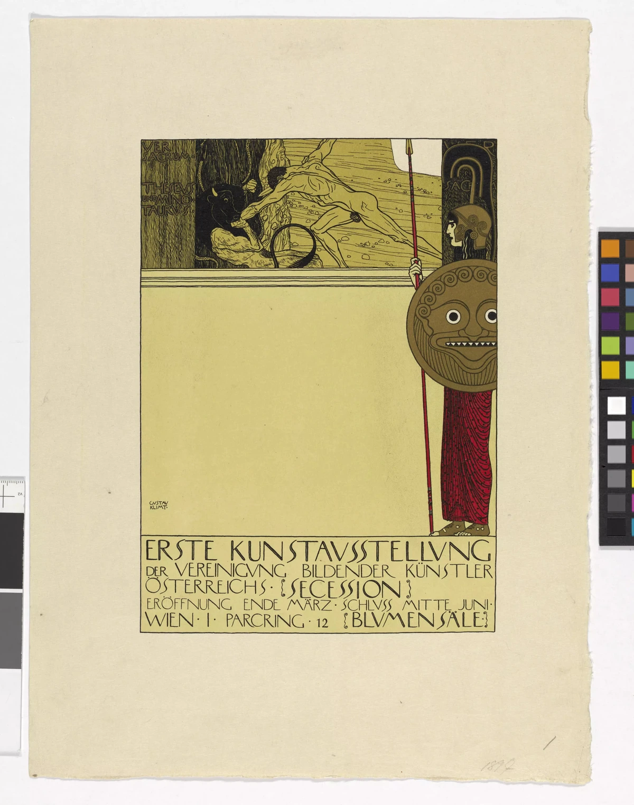
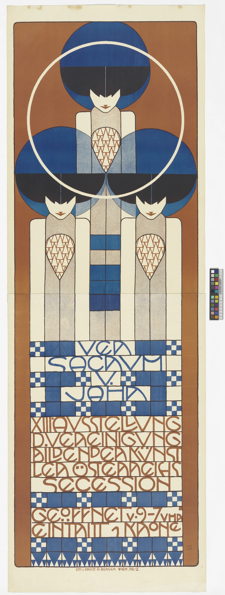
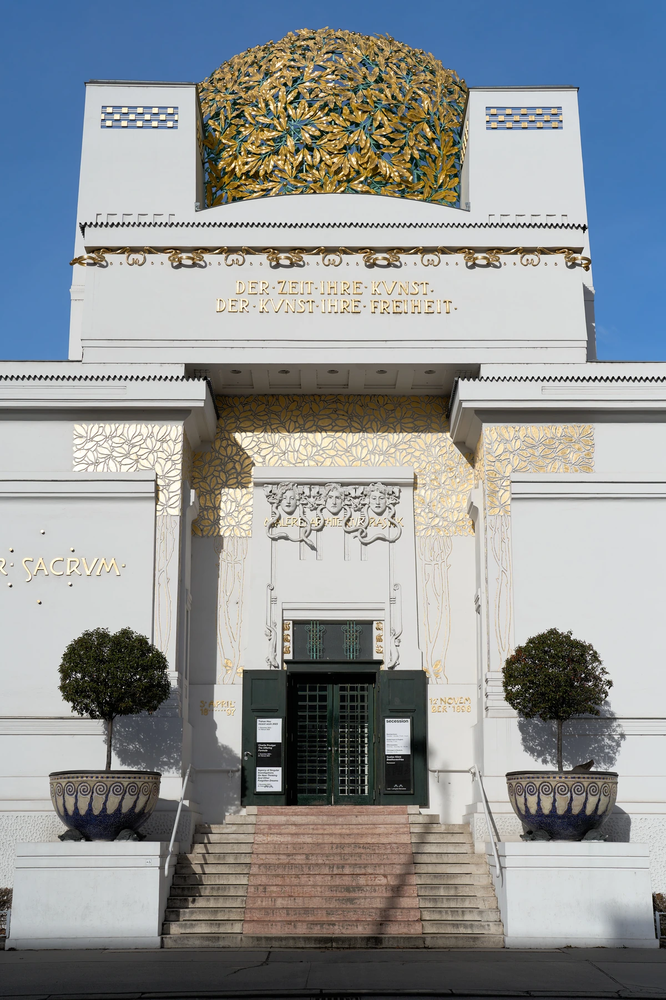
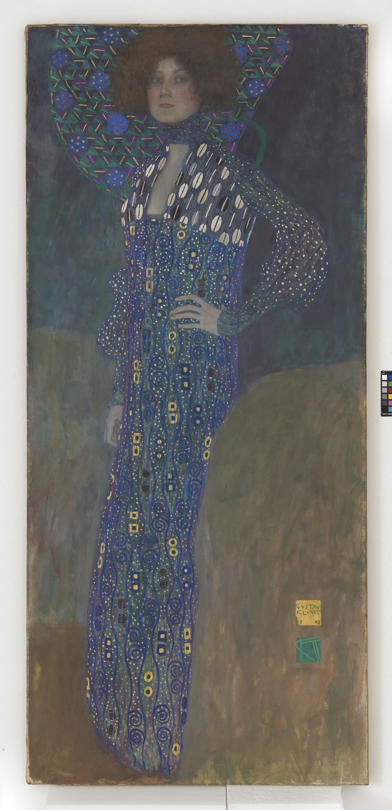

何もない場所が、目を引く。
まんなかの広い黄色に注目。絵でうめないことで、周りの人物や文字が目に入りやすくなります。
代表作品画像4点・建築、ポスター、肖像画を比較
歴史的な芸術家団体・展覧会と出版を通じた運動
Vienna Secession
絵をかいても、人に見てもらう場所が必要です。
1897年、ウィーンのクリムトたちは、それまで入っていた美術の団体をはなれました。
そして、自分たちで作品を見せるための団体をつくりました。
これが「ウィーン分離派」です。
建物やポスター、雑誌もつくり、作品を人々に届けました。
実作品を見る · 1898年

画像を表示できませんでした。下の作品ページで確認できます。
グスタフ・クリムト／印刷：アルベルト・ベルガー · 1898年
まんなかの広い黄色に注目。絵でうめないことで、周りの人物や文字が目に入りやすくなります。
右の女神と、下の文字のかたまり。その間にある空いた場所も、画面を組み立てる大事な一部です。
Wien Museum, Inv.-Nr. 129001/4 / CC0
作品・写真の元ページを見る ↗この画像はウィーン・ミュージアムの小型版（64×47cm）。MAK所蔵の別の版とは区別します。
原画像をそのまま保存しています。表示用画像は全体の形と色を保って縮小し、WebPに変換しました。切り抜きや描き直しはしていません。紙の外側の撮影用カラーチャートも原画像のまま残しています。
実作品を見る · 1902年

画像を表示できませんでした。下の作品ページで確認できます。
コロマン・モーザー／印刷：アルベルト・ベルガー · 1902年
三人の青い髪は大きな丸。服の模様や下のます目には四角と三角。人と文字が、同じ形の仲間でつながっています。
細い線で描かれた文字を、ます目と見比べましょう。読むための文字が、画面の模様にもなっています。
Wien Museum, Inv.-Nr. 129060/1 / CC0
作品・写真の元ページを見る ↗この紙は187.6×63.5cmの細長いポスター。雑誌の表紙ではありません。
原画像をそのまま保存しています。表示用画像は全体の形と色を保って縮小し、WebPに変換しました。切り抜きや描き直しはしていません。紙の外側の撮影用カラーチャートも原画像のまま残しています。
実作品を見る · 建物1898年／写真2024年

画像を表示できませんでした。下の作品ページで確認できます。
ヨーゼフ・マリア・オルブリヒ（建築）／写真：Conny Duck · 建物1898年／写真2024年
まっすぐな白い壁の上に、丸い金色のかたまり。葉を集めた屋根が、建物の目印になっています。
作品を発表するために、芸術家たちは会館を建てました。入口の文字や飾りも、建物と一緒に見てみましょう。
Secession Building Vienna — © Conny Duck, 2024, via Wikimedia Commons. Architecture: Joseph Maria Olbrich, 1898. / CC BY-SA 4.0
作品・写真の元ページを見る ↗2024年に撮影した正面です。建物は修理や建て直しを経ています。1898年そのままの姿ではなく、写真には左右の棟全体も入りません。
原画像をそのまま保存しています。表示用画像は全体の形と色を保って縮小し、WebPに変換しました。切り抜きや描き直しはしていません。縮小した写真もCC BY-SA 4.0で提供します。
実作品を見る · 1902年

画像を表示できませんでした。下の作品ページで確認できます。
グスタフ・クリムト · 1902年
顔や手には、丸みがあります。一方、服には丸や四角がずらり。人を描いた絵の中で、模様も大きな役目を持っているのですね。
腰に当てた腕は、横へ張り出しています。そこから目を下へ動かすと、長い服がすっと続きます。体の曲がり方と、縦に続く模様を見比べてみましょう。
Gustav Klimt, Bildnis Emilie Flöge, 1902 · Wien Museum, Inv.-Nr. 45677 · 写真：TimTom / Wien Museum · CC BY 4.0
作品・写真の元ページを見る ↗人物を描いた絵を「肖像画（しょうぞうが）」といいます。この絵は、第18回ウィーン分離派展に出品されたと、ビクトリア国立美術館の展覧会図録に記されています。人物と服の模様を一つの画面にまとめる工夫を見るために選びました。
制作年は所蔵館の記録に合わせて1902年としています。原作は油絵で、縦178cm、横80cmです。展示された期間の細かな日付は、ここでは断定しません。
これは実作品の写真です。AAGAによる模写ではありません。原画像をそのまま保存し、表示用画像だけを縮小してWebPに変換しました。埋め込まれた色の情報を保ち、切り抜きや描き直しはしていません。作品の外にある白い背景や撮影用の色見本も残しています。
写真の利用条件はCC BY 4.0です。作品の著作者、所蔵館、写真撮影者を表示しています。原作と写真の権利は分けて記録しています。
ここからは、所蔵館などの作品ページで見てみましょう。この欄の作品画像は、まだ掲載していません。
原題：Ver Sacrum 第1年・特別号
複数の人が絵や文章などを持ち寄った雑誌です。
ページの中で、文字と絵がどう並ぶかにも注目できます。
Alfred Roller（編集）／Peter Behrens・Leopold Kainradl（誌面装飾、記録上）ほか / 1898
展示だけでなく、出版によって作品や考えを伝えた例です。複数の寄稿者の仕事と、図像や文字の関係を、一冊の号ごとに見る候補です。
団体アーカイブVS 1 - 4にある、28.5×30×0.4cmの特別号です。Gerlach & Schenkが出版し、Philipp & Kramerが印刷しました。通常の第1号の表紙と混同せず、Moser一人による設計とも記しません。掲載する具体的な見開きと、画像の権利は未確認です。
原題：Beethoven Frieze（第14回分離派展のための壁面連作）
1902年の会場では、左側に、クリムトがかいた壁の絵がありました。
壁の開いたところからは、クリンガーのベートーヴェン像が見えました。
別々の作品を、一つの部屋でどう見せるかも考えられています。
Gustav Klimt（壁画）／Josef Hoffmann（展覧会全体の指揮） / 1902
会場左側の壁画と、開口部の向こうに見えるMax KlingerのBeethoven像が、一つの空間で結びつきます。複数の芸術を一つの体験にまとめる考えがわかる例です。壁画だけを掲載する場合も、展示全体との関係を説明します。
21人が参加した展覧会を、Klimt一人の作品とは考えません。現在の地下展示室は1986年から公開されたもので、1902年の会場配置とは異なります。展覧会の終了日は、公式説明とアーカイブの日付欄で食い違うため、ここでは年だけを示します。
魚の模様が付いた戸棚です。
1900年の第8回分離派展に出されました。
暮らしに使う家具も、作品として人に見せていたのです。
コロマン・モーザー（設計）／ポルトワ＆フィックス（制作） / 1900年
魚の模様をつけた戸棚です。1900年の第8回分離派展に出されました。展覧会には、絵だけでなく暮らしで使う家具もあったのです。
MAK H1700。写真の商用利用条件は未確認のため、ここには載せず所蔵館の作品ページへ案内します。
自分たちの作品を見せる場所も、伝える方法も、自分たちで作ろう。ウィーン分離派は、古い美術の仕組みから離れた芸術家の団体です。作品に加え、会館、展覧会ポスター、雑誌を一緒に見ると、その新しさが分かります。
1897年、クリムト（Klimt）らは、保守的な美術家団体キュンストラーハウス（Künstlerhaus）から分かれました。初代会長はクリムトです。1898年には、オルブリヒ（Olbrich）が設計した会館が完成しました。雑誌『ヴェル・サクルム（Ver Sacrum）』も活動を伝えました。1905年にクリムトのグループが離れますが、団体が解散したわけではありません。団体と展示活動は現在も続いています。
以下は観察のための問いです。すべての作品に共通する固定ルールや、未取得画像の実見結果ではありません。
金色など、一つの配色だけでは説明できません。会館のドームを覆う金箔（きんぱく：薄くのばした金）と、ポスターや雑誌の紙・インクは、別の材料です。記録によると、『Ver Sacrum』の1898年特別号には、青の活版印刷（かっぱんいんさつ：文字などの出っ張った面にインクを付けて紙に押す印刷）の表紙と、緑がかった紙の部分があります。現代に刷り直した物の色を、当時の印刷の証拠にはしません。
クリムトの第1回展ポスターでは、文字のまとまり、何も印刷していない余白、人物を描く線の関係を見ます。文字が情報を伝えると同時に、飾りとしてどう働くかを、実際の印刷面で確かめます。
会館では、展覧会のための空間と、意味を込めた装飾を分けて見ます。建築を担当したオルブリヒと、装飾に参加したモーザー（Moser）らの仕事を、一人の作品にまとめないことが大切です。
建築、ポスター、雑誌では、組み立てる要素が違います。広い余白と、文字や絵が密集した部分の対比は、それぞれでどう働くでしょうか。参加した全員が同じ様式を使ったとは考えません。
COMPARE
アール・ヌーヴォー（Art Nouveau）やユーゲントシュティール（Jugendstil）は、複数の地域や表現にまたがる様式の呼び名です。一方、ウィーン分離派は、結成や展覧会の記録を持つ団体です。ウィーン工房（Wiener Werkstätte）は、ホフマン（Hoffmann）・モーザー・フリッツ・ヴェルンドルファー（Fritz Waerndorfer）が1903年に設立した、別の工芸・デザイン組織です。
人や、複数の芸術を一つにまとめる考え方には接点がありますが、同じ組織ではありません。モーザーが分離派を離れたのは1905年、工房を離れたのは1907年です。
項目を横に並べる ↗READ TODAY
同じ団体が現在も展示を続けていることと、1900年前後の形をまねた現代のグラフィックは、別の話です。書体や金色の飾りだけで関連を決めず、誰が展示し、編集し、制作しているかを確かめましょう。
名前を開くと、生没年や工房の活動年代、主な仕事、作品と出典を読めます。ここに挙げた人だけで、この項目の全体を説明するものではありません。
Gustav Klimt
ウィーンで活動した画家。1897年に創設された分離派の初代会長を務めました。絵画に加えて展覧会のポスターや壁画も制作し、人の姿と装飾を結びつけました。
ポスター、壁面の連作、肖像画を通じ、発表する場所や目的による仕事の違いを見られます。
1898年のポスター。ここで扱うのはウィーン・ミュージアムの所蔵品で、別館の同図柄のポスターとは所蔵個体が異なります。
クリムトによる壁画と、ホフマンが指揮した展覧会全体とは担当の範囲が異なります。会場にはほかの芸術家の仕事もあり、現在の地下展示室は1902年の展示配置とは異なります。
1902年の肖像画。作品の作者はクリムトで、掲載画像の撮影者とは区別します。
人物の出典：ウィーン・ミュージアム ↗ / ウィーン・ミュージアム ↗ / ウィーン分離派 ↗ / ウィーン分離派 ↗
Koloman Moser
ウィーンの画家・デザイナー。分離派の創設に参加し、ポスター、家具、展示空間などを手がけました。ホフマンらとウィーン工房も創設し、平面の装飾と暮らしの道具の両方を設計しました。
同じ人物の仕事を、展覧会ポスターと、展覧会に出された家具から見られます。
1900年の第8回分離派展に出品された戸棚。モーザーが設計し、ポルトワ＆フィックスが製作しました。
1904年製の銀のかご。白く塗られた鉄板製の別製品ではなく、2017年はこの所蔵品の収蔵年です。
人物の出典：ウィーン・ミュージアム ↗ / ウィーン応用美術館（MAK） ↗ / ウィーン応用美術館（MAK） ↗ / ウィーン分離派 ↗ / レオポルド美術館 ↗ / ウィーン応用美術館（MAK） ↗
Joseph Maria Olbrich
ウィーンとダルムシュタットで活動した建築家・デザイナー。分離派の創設に参加し、その展示会館を設計しました。建物だけでなく、室内や家具なども一体として考えました。
会館そのものも、新しい芸術の考えを伝える場でした。建築の設計と、各部の装飾、後年の写真は別の仕事です。
建物は1898年に完成。装飾には他の芸術家も参加しました。章に掲載された2024年の写真の撮影者はコニー・ダックで、建築家とは別人です。
人物の出典：レオポルド美術館 ↗ / ウィーン分離派 ↗ / ウィーン分離派 ↗
Alfred Roller
モラヴィアに生まれた美術家。ポスター制作に加え、分離派の雑誌の編集や、1902年の展覧会の壁面装飾にも携わりました。
特別号における編集の担当を示します。一冊に載る絵や文章を、すべてローラーの作とは扱いません。
通常の創刊号ではなく、1898年の特別号です。複数の人が関わる雑誌であり、編集者や装飾の担当者が、掲載された全作品の作者という意味ではありません。
人物の出典：ニューヨーク近代美術館 ↗ / ウィーン分離派 ↗ / ウィーン分離派 ↗
Peter Behrens
ドイツの画家・建築家・デザイナー。絵画から工芸、建築、工業製品へと仕事を広げました。この章では、分離派の雑誌に誌面装飾を寄せた人物として取り上げます。
1898年の特別号の記録に基づく関係です。ウィーン分離派の創設者や、誌面全体の単独設計者という意味ではありません。
通常の創刊号ではなく、1898年の特別号です。複数の人が関わる雑誌であり、編集者や装飾の担当者が、掲載された全作品の作者という意味ではありません。
人物の出典：ドイツ歴史博物館 ↗ / ウィーン分離派 ↗
Leopold Kainradl
1898年の『ヴェル・サクルム』特別号で、誌面装飾を手がけた美術家。分離派のアーカイブは、同号の32頁に用いられた装飾図の原画も記録しています。
特別号の装飾の担当者として紹介します。一冊全体の編集や、他の掲載作品の制作とは役割が異なります。
通常の創刊号ではなく、1898年の特別号です。複数の人が関わる雑誌であり、編集者や装飾の担当者が、掲載された全作品の作者という意味ではありません。
Josef Hoffmann
建築、室内、生活用品、展示を手がけたデザイナー・教育者。分離派とウィーン工房の創設に参加しました。1902年のベートーヴェン展では、複数の芸術家の仕事をまとめる指揮を担いました。
クリムトの壁画の作者ではなく、壁画や彫刻が一つの会場で出会う展示をまとめた立場です。
クリムトによる壁画と、ホフマンが指揮した展覧会全体とは担当の範囲が異なります。会場にはほかの芸術家の仕事もあり、現在の地下展示室は1902年の展示配置とは異なります。
人物の出典：ウィーン応用美術館（MAK） ↗ / ウィーン分離派 ↗ / ウィーン分離派 ↗
Albert Berger (Kunstanstalt)
美術印刷を担った組織。ウィーン・ミュージアムは、第13回分離派展のポスターで、モーザーを図案の作者、同印刷所を印刷の担当として記録しています。
デザインを考えた人と、紙に刷った印刷所を分けて紹介します。
工房の出典：ウィーン・ミュージアム ↗
Portois & Fix
ウィーンで家具の製作を担った組織。モーザーの設計による戸棚《豊かな漁獲》を製作しました。設計者の構想を、材料と製作技術によって形にする役割です。
1900年の戸棚に記録された、モーザーの設計と製作組織の分担を示します。
1900年の第8回分離派展に出品された戸棚。モーザーが設計し、ポルトワ＆フィックスが製作しました。
工房の出典：ウィーン応用美術館（MAK） ↗
このページを書くときに使った資料です。作品の説明、画像を入手できたかどうか、画像を使う条件は、それぞれ別に確かめています。検索結果で読んだ情報と、元のページを開いて確かめた情報も、調査の記録で分けています。
この項目の実作品画像は4点、参照・関連画像は0点です。画像の収集は続けています。